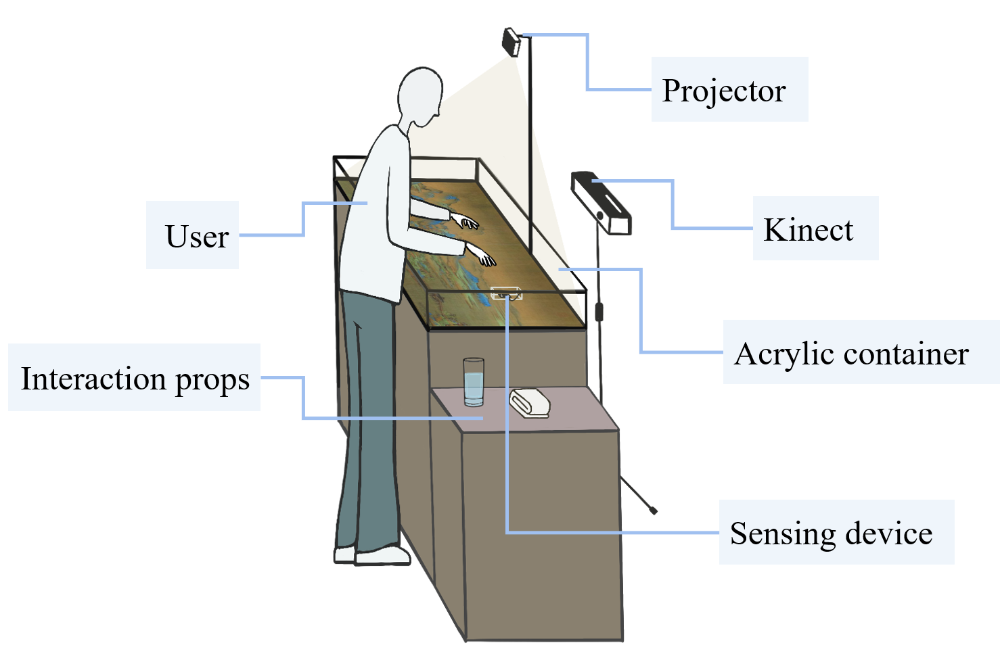
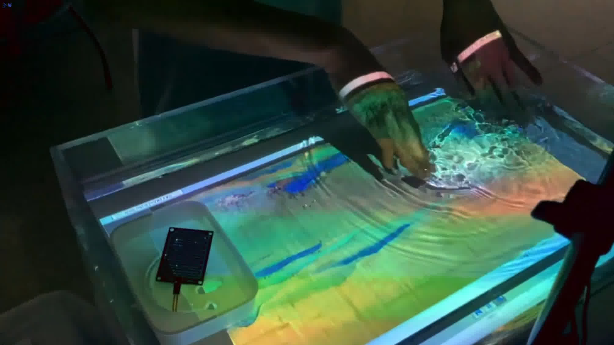
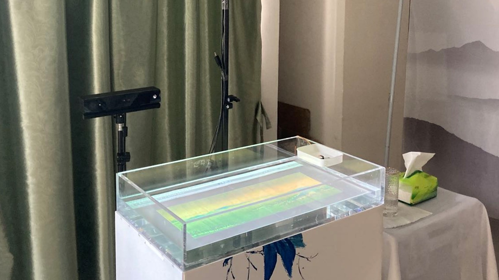

Landscape Rippling: Water-Mediated Interaction Design for Innovative Exhibition
Keywords: Human-Computer Interaction; Natural User Interface; Digital Art
• 2021/10 - 2022/05
Landscape Rippling is a water-mediated interaction system, with the famous Chinese painting "A Panorama of Rivers and Mountains" as its context.
Concept
Pouring water into the container would restore the colors of painting. Then uers can interact with water to explore more detailed scenes in the painting.
As tangible water consisting of its interface, combined with lights, music, and other audiovisual effects, this interaction could provide immersive experience.
Benefiting from the common points with river surface, the water interface connects the reality and virtual world.
Through playing with water in the container, experiencers could feel that they get close to the river and touch the scenery inside the painting.
That becomes a process of boundary elimination.
Technical Approach
- Motion detection: a Kinect tracks human movement, processing joint points and depth data
- Water sensor: sending on/off digital signals in terms of the water level in container
- Participants can pour water to color, or use hand gesture to explore details of painting

Concept design of Landscape RipplingOutputs
- UX test conducted within XMU campus (Jan, 2021) revealed the effectiveness of this context-based interaction on improving uers' immersion, encouraging reflection, and enhancing imagination.
- This work was orally presented on the 35th International Conference on Computer Animation and Social Agents (CASA 2022), with full papar published on Wiley Online Library.
Gallery


